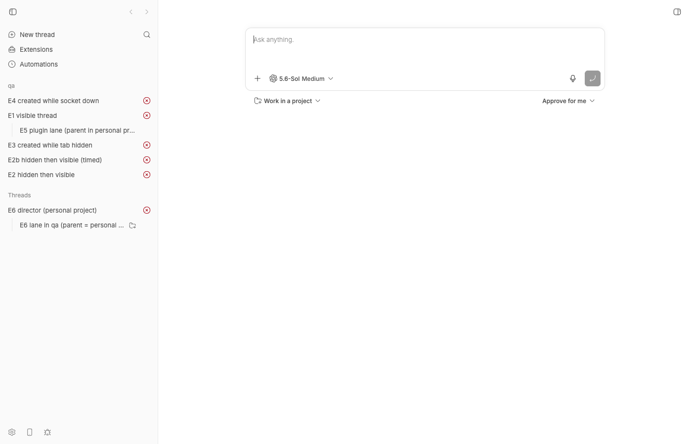
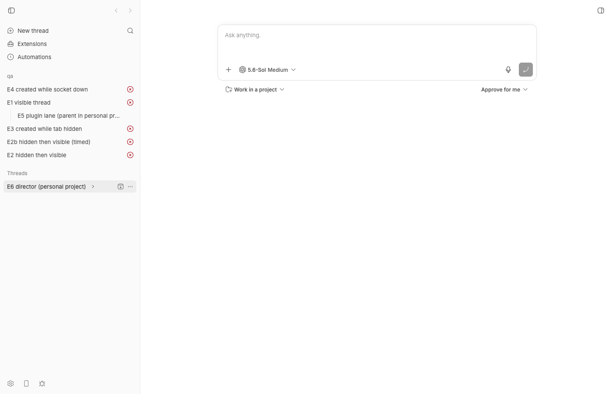
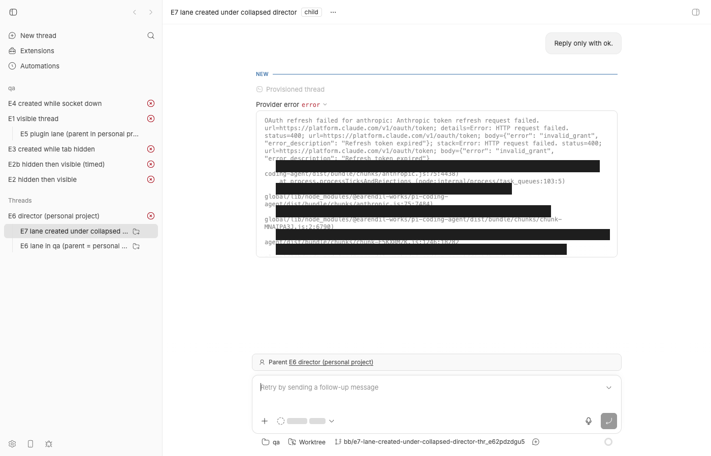
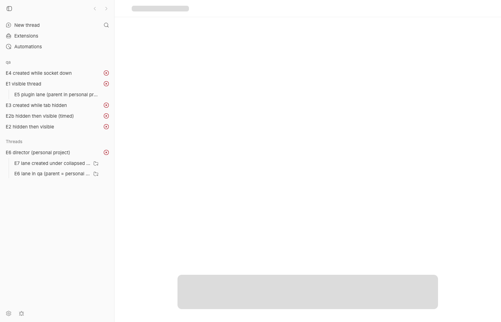
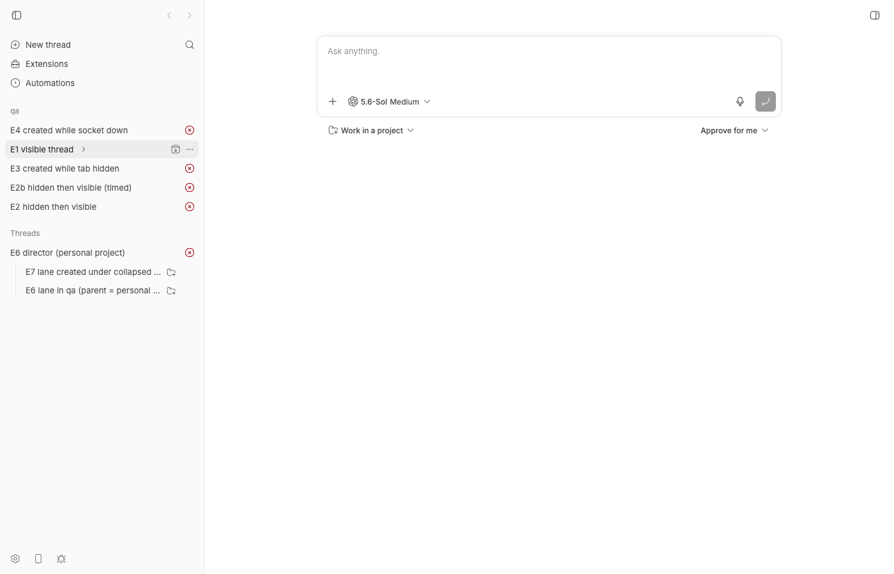

#2326 · Visible unarchived threads are absent from the app list until opened by direct link
Verdict: REPRODUCED · Root-cause confidence: medium (the mechanism below produces the exact reported symptom end to end and every alternative the issue suggests was tested and ruled out, but the reporter did not include parentThreadId for the two affected threads, so the mapping to their specific data is inferred)
1. TL;DR
The sidebar does not list threads by the project they belong to. Since PR #1849 (commit d0e0bf5aa, shipped in 0.39.0) a child thread is filed under the project of its root ancestor, nested under the parent row, and a child that lives in a different project than its parent never appears in its own project's group at all. Child rows are also only rendered while the parent row is expanded, and that collapse state is persisted per parent id in localStorage. A "tenant lane" spawned by a director thread (the normal bb thread spawn --project <tenant> --parent-self pattern) therefore shows up under the director's project, and if the director row has ever been collapsed it shows up nowhere. The server's GET /sidebar-bootstrap, GET /threads?projectId= and bb thread list --project all group by thread.projectId, which is why the CLI says the thread is in the project while the app does not show it there. Opening the thread by direct link runs a sidebar effect that expands every collapsed ancestor of the selected thread (and persists that), which is why the thread "appears" afterwards. Nothing is inserted into a list cache on open: the bootstrap, realtime invalidation, hidden→visible flips, hidden-tab deferral and reconnect catch-up were all exercised live and behaved correctly.
2. Claims vs findings
| Claim from the issue | Status | Evidence |
|---|---|---|
| A visible, unarchived thread of a project can be absent from the app's thread list until it is opened through a direct thread link; afterwards it appears. | Verified | E7 below: lane thr_e62pdzdgu5 (project qa, visible, unarchived) is absent from the whole sidebar (screenshot 08, ARIA snapshot shows only "Expand E6 director … threads"), then after navigating to /projects/proj_gr2ncaerb7/threads/thr_e62pdzdgu5 and back it is listed (screenshot 10). |
bb thread show / bb thread list --project … --include-hidden return the thread with visibility=visible, archivedAt=null. | Verified (analogue) | GET /api/v1/threads?projectId=proj_gr2ncaerb7 and GET /api/v1/sidebar-bootstrap both list the lane under qa (appendix A). Same DB filters as the CLI: buildListThreadsFilters / buildListThreadsForProjectsFilters group by threads.projectId. |
| "The observed shape is an app list bootstrap/filter/subscription invalidation defect." | Partly refuted | It is an app-side grouping and progressive-disclosure behavior, not an invalidation bug. Realtime paths were exercised live and all updated the sidebar within <1 s: plain create (E1), hidden→visible PATCH (E2/E2b: title-changed frame at +47 ms, bootstrap refetch at +172 ms, row at +394 ms), create while the tab is hidden (E3: deferred, flushed on visible), create while the tab is offline (E4: caught up on resume). |
| "Verify whether direct open inserts the fetched detail record into a list cache that was incomplete or filtered at bootstrap." | Refuted | ingestThreadDetailBootstrap writes only the thread, environment and host caches, never the sidebar list (thread-detail-cache-owner.ts#L49-L73). What changes on open is the persisted collapse state: the selected-thread effect in ProjectList.tsx removes every ancestor from collapsedThreadIds. |
| "Check project-id filtering … for plugin-originated managed-worktree lanes." | Verified – this is the cause | ProjectList.tsx buckets threads by createSidebarProjectIdResolver, i.e. by the root ancestor's project, not by thread.projectId. A lane whose parent (director) lives in another project is never placed in the lane's own project group. |
| "This is not a large-list boundary" (30 threads). | Verified | The bootstrap is unpaginated. The only 30-cap is MAX_CACHED_SIDEBAR_THREADS_PER_PROJECT, which bounds the localStorage placeholder replay and is replaced by the live response. |
| Both active and idle lanes are affected. | Verified | The mechanism is independent of status; grouping uses only parentThreadId/projectId and the collapse set. |
| "No native visibility repair occurred between absence and appearance." | Unverified | Consistent with the mechanism (no server mutation is needed), but not independently checkable from the issue data. |
{kind=link}
3. Environment
- bb
494f66526913557ab076e048218236f0a6610927(main, 2026-08-24;packages/bb-appversion 0.39.0, matching the reporter's CLI 0.39.0). Also checkedorigin/mainup to21cb6b68b: no commits touch the sidebar grouping, so the behavior is unchanged there. - macOS 26.5.2 (Darwin 25.5.0, Apple Silicon), Node v22.23.1, pnpm; headless Chrome driven by
doobie0.1.2. - Providers:
pi0.84.3 (used for all threads; its Anthropic OAuth is expired on this machine so every thread fails instantly at zero cost, which is fine because list membership only depends on thread rows), codex-cli 0.149.1. - Dev instance from
scripts/bb-dev-app current: Apphttp://localhost:15205, Serverhttp://localhost:23205, host daemon127.0.0.1:31205, data dir~/.bb-dev/bb-machines-HOST.getbb.app-checkouts-bb-.claude-worktrees-wf_846839f8-f8a-53-ded22dad47f1(deleted during cleanup). Hosthost_76axgrjibb, projectqa=proj_gr2ncaerb7on scratch repo/tmp/bb-2326-qa-repo.
4. Minimal reproduction
All commands are copy-pasteable against your own dev instance after eval "$(scripts/bb-dev-app env)"; replace the host/project ids with yours. Threads are created through the public API exactly as a plugin or bb thread spawn would; pi is used because it needs no paid turn here.
- Start the app and create a project.
scripts/bb-dev-app current # prints App/Server URLs and data dir mkdir -p /tmp/bb-2326-qa-repo && git -C /tmp/bb-2326-qa-repo init -q && echo qa > /tmp/bb-2326-qa-repo/README.md \ && git -C /tmp/bb-2326-qa-repo add -A && git -C /tmp/bb-2326-qa-repo -c user.email=qa@x -c user.name=qa commit -qm init curl -s $BB_SERVER_URL/api/v1/hosts | jq '.[0].id' # -> "host_76axgrjibb" curl -s -X POST $BB_SERVER_URL/api/v1/projects -H 'content-type: application/json' \ -d '{"name":"qa","source":{"type":"local_path","path":"/tmp/bb-2326-qa-repo","hostId":"host_76axgrjibb"}}' | jq .id # -> "proj_gr2ncaerb7"Openhttp://localhost:15205/in a browser and keep it open (screenshot 00: "qa – No threads"). - Create a "director" thread in another project (here the personal project; any other standard project behaves the same).
curl -s -X POST $BB_SERVER_URL/api/v1/threads -H 'content-type: application/json' -d '{ "projectId":"proj_personal","providerId":"pi","origin":"sdk","title":"E6 director (personal project)", "input":[{"type":"text","text":"Reply only with ok."}],"environment":{"type":"project-default"}}' | jq '{id,projectId,visibility}' # {"id":"thr_mvzfud8chq","projectId":"proj_personal","visibility":"visible"} - Create a "lane" in project
qawhose parent is the director (this is whatbb thread spawn --project qa --parent-self --new-environment worktreesends from inside the director).curl -s -X POST $BB_SERVER_URL/api/v1/threads -H 'content-type: application/json' -d '{ "projectId":"proj_gr2ncaerb7","providerId":"pi","origin":"plugin","originPluginId":"tenant-director", "title":"E6 lane in qa (parent = personal director)","parentThreadId":"thr_mvzfud8chq", "input":[{"type":"text","text":"Reply only with ok."}], "environment":{"type":"host","hostId":"host_76axgrjibb","workspace":{"type":"managed-worktree","baseBranch":{"kind":"default"}}}}' \ | jq '{id,projectId,visibility,parentThreadId}' # {"id":"thr_fzurju6nyj","projectId":"proj_gr2ncaerb7","visibility":"visible","parentThreadId":"thr_mvzfud8chq"}Expected: the lane is listed in theqagroup (the server lists it there, see below). Actual: theqagroup does not contain it; it is rendered under the personal "Threads" section nested beneath the director, with a folder-export marker.curl -s $BB_SERVER_URL/api/v1/sidebar-bootstrap | jq -r '.projects[],.personalProject | "\(.id) \(.name): \([.threads[].title])"' proj_gr2ncaerb7 qa: ["E6 lane in qa (parent = personal director)","E4 created while socket down","E5 plugin lane (parent in personal project)","E3 created while tab hidden","E2b hidden then visible (timed)","E2 hidden then visible","E1 visible thread"] proj_personal Personal: ["E6 director (personal project)"]

Step 3. The server puts "E6 lane in qa" in project qa; the sidebar renders it under "Threads" (personal project) nested under "E6 director". Theqagroup has no trace of it. - Collapse the director row once (click its chevron). The lane disappears from the sidebar entirely. This collapse is persisted in localStorage (
collapsedThreadIdsAtom), so it survives reloads.
Step 4. After collapsing "E6 director", no row for the lane exists anywhere. ARIA snapshot: button "Expand E6 director (personal project) threads"and no "Open E6 lane…" link. - Create another lane while the director is collapsed (same request as step 3 with title "E7 lane created under collapsed director" →
thr_e62pdzdgu5). The sidebar receives thethread-createdframe and refetches the bootstrap, but the new lane is still invisible:ARIA snapshot of the sidebar after creation (aria-hidden rows excluded): - button "qa Collapse qa section …" - link "Open E4 created while socket down" - link "Open E1 visible thread" - link "Open E5 plugin lane (parent in personal project)" - link "Open E3 created while tab hidden" - link "Open E2b hidden then visible (timed)" - link "Open E2 hidden then visible" - button "Threads Collapse Threads section …" - link "Open E6 director (personal project)" - button "Expand E6 director (personal project) threads" <-- E6 lane and E7 lane are not listed

Step 5. "E7 lane created under collapsed director" is a visible, unarchived thread of qaand is shown nowhere. - Open the lane by direct link (
bb thread open thr_e62pdzdgu5, abb://thread/…link, or the URL/projects/proj_gr2ncaerb7/threads/thr_e62pdzdgu5), then go back to the root view.
Step 6a. On the thread page the footer says project qa/ Worktree, parent "E6 director (personal project)". The sidebar has expanded the director and now lists both lanes under "Threads".
Step 6b. Back at the root: the director row is now [expanded]and both lanes are listed — the "appears after direct open" symptom. They are still under the personal section, not underqa. - Same-project flavor: a lane whose parent is in the same project ("E5 plugin lane" under "E1 visible thread" in
qa) also vanishes from the project group as soon as its parent is collapsed, until it is opened by direct link.
Step 7. With "E1 visible thread" collapsed, the qagroup shows five rows while the server lists seven threads for the project.
{kind=link}
Unit-level repro (fails on main)
2326/repro/sidebarProjectMembership.repro-2326.test.ts — drop it into packages/client-core/test/ and run pnpm exec vitest run test/sidebarProjectMembership.repro-2326.test.ts from packages/client-core. The first test documents the current behavior (passes); the second asserts what the issue expects and fails with expected [ 'thr_root_in_tenant' ] to deeply equal [ 'thr_lane', 'thr_root_in_tenant' ].
import type { ThreadListEntry } from "@bb/domain";
import { describe, expect, it } from "vitest";
import {
buildProjectThreadGroups,
createSidebarProjectIdResolver,
getProjectThreadItemDescendants,
} from "../src/sidebar/projectThreadGroups.js";
function createThread(overrides: Partial<ThreadListEntry>): ThreadListEntry {
return {
id: "thr_1", projectId: "proj_1", environmentId: null, providerId: "codex",
title: "Thread", titleFallback: "Thread", sectionId: null, status: "idle",
parentThreadId: null, sourceThreadId: null, originKind: null, originPluginId: null,
visibility: "visible", archivedAt: null, pinnedAt: null, pinSortKey: null, deletedAt: null,
lastReadAt: 0, latestAttentionAt: 2, createdAt: 1, updatedAt: 2,
activity: { activeWorkflowCount: 0, activeBackgroundAgentCount: 0, activeBackgroundCommandCount: 0, activePlanModeCount: 0, activeGoalCount: 0 },
hasPendingInteraction: false, environmentHostId: null, environmentName: null, environmentBranchName: null,
environmentWorkspaceDisplayKind: "managed-worktree",
runtime: { displayStatus: "idle", hostReconnectGraceExpiresAt: null },
...overrides,
};
}
// Mirrors ProjectList.tsx `threadsByProject`: bucket every sidebar thread by
// the resolver's project id, then build each project's tree from its bucket.
function listProjectGroupThreadIds(threads: readonly ThreadListEntry[], projectId: string): string[] {
const resolve = createSidebarProjectIdResolver(new Map(threads.map((thread) => [thread.id, thread])));
const bucket = threads.filter((thread) => resolve(thread) === projectId);
return getProjectThreadItemDescendants(buildProjectThreadGroups(bucket)).map((thread) => thread.id);
}
const director = createThread({ id: "thr_director", projectId: "proj_personal", title: "tenant director" });
const lane = createThread({ id: "thr_lane", projectId: "proj_tenant", parentThreadId: "thr_director",
originPluginId: "tenant-director", title: "tenant lane", createdAt: 5, latestAttentionAt: 6 });
const sibling = createThread({ id: "thr_root_in_tenant", projectId: "proj_tenant", title: "ordinary root thread" });
const threads = [director, lane, sibling];
describe("#2326 sidebar project membership of cross-project children", () => {
it("documents current behavior: the lane is re-homed under its parent's project", () => {
const resolve = createSidebarProjectIdResolver(new Map(threads.map((thread) => [thread.id, thread])));
expect(resolve(lane)).toBe("proj_personal");
expect(listProjectGroupThreadIds(threads, "proj_personal")).toEqual(["thr_director", "thr_lane"]);
});
it("expected by the issue: a visible unarchived thread of proj_tenant is listed under proj_tenant", () => {
const nativeProjectThreadIds = threads
.filter((t) => t.projectId === "proj_tenant" && t.visibility === "visible" && t.archivedAt === null && t.deletedAt === null)
.map((t) => t.id).sort();
const sidebarProjectThreadIds = listProjectGroupThreadIds(threads, "proj_tenant").sort();
expect(sidebarProjectThreadIds).toEqual(nativeProjectThreadIds); // FAILS on main
});
});
$ pnpm exec vitest run test/sidebarProjectMembership.repro-2326.test.ts
❯ @bb/client-core test/sidebarProjectMembership.repro-2326.test.ts (2 tests | 1 failed) 11ms
× expected by the issue: a visible unarchived thread of proj_tenant is listed under proj_tenant 7ms
AssertionError: expected [ 'thr_root_in_tenant' ] to deeply equal [ 'thr_lane', 'thr_root_in_tenant' ]
- Expected
+ Received
[
- "thr_lane",
"thr_root_in_tenant",
]
Test Files 1 failed (1)
Tests 1 failed | 1 passed (2)
Repro files (browser scripts, captured timing logs, test): 2326/repro/, 2326/e2b-timing.json, 2326/e3-hidden-tab.json, 2326/e4-offline.json, 2326/vitest-repro.txt.
5. Root cause
Two different definitions of "the project's thread list". The server groups strictly by thread.projectId when it builds the bootstrap (routes/projects.ts#L225-L240) and when it answers GET /threads?projectId= / bb thread list --project (db/data/threads.ts#L673-L717). The app ignores that grouping and re-buckets every thread by its root ancestor's project:
// apps/app/src/components/sidebar/ProjectList.tsx#L1044-L1059
const threadsByProject = useMemo(() => {
const grouped = new Map<string, ThreadListEntry[]>();
const resolveSidebarProjectId = createSidebarProjectIdResolver(
new Map(threads.map((thread) => [thread.id, thread])),
);
for (const thread of threads) {
if (effectivePinnedThreadIds.has(thread.id)) continue;
// Cross-project children render under their parent's project group.
const sidebarProjectId = resolveSidebarProjectId(thread);
…
// packages/client-core/src/sidebar/projectThreadGroups.ts#L324-L357
export function createSidebarProjectIdResolver(threadById) {
…
while (current.parentThreadId !== null) {
const parent = threadById.get(current.parentThreadId);
if (parent === undefined || visitedThreadIds.has(parent.id)) break;
…
current = parent;
}
const sidebarProjectId = resolved ?? current.projectId; // root ancestor's project wins
Permalinks: ProjectList.tsx#L1044-L1059, projectThreadGroups.ts#L324-L357. This was introduced deliberately by #1849 "Support child threads whose parent lives in another project" (commit d0e0bf5aa, merged 2026-08-18, for issue #1711): "a cross-project child stays nested under its parent in 'By project' mode and does not appear as a root in its own project group." The only hint is a folder-export marker on the nested row with an "In project …" tooltip (ThreadRow.tsx#L134); the child's own project group gets nothing.
Children are only rendered while the parent is expanded, and that state is sticky. ProjectThreadTree renders node.children only when !isCollapsed (ProjectRow.tsx#L1133); the collapsed set is collapsedThreadIdsAtom, persisted in localStorage (sidebarCollapsedAtoms.ts#L116-L121). A new child spawned under a parent that the operator collapsed at any point in the past is therefore never shown, even though the realtime thread-created frame arrived and the bootstrap was refetched (verified in step 5: the refetched bootstrap contains the lane).
Why a direct open "fixes" it. When a thread becomes the selected route, ProjectList walks its ancestor chain and removes every ancestor from the collapsed sets, and also un-collapses the machine/section container (ProjectList.tsx#L1774-L1836):
const threadIdsToExpand = new Set<string>();
let currentThread = selectedThread;
while (currentThread && remainingHops > 0) {
…
const parentThread = threadById.get(parentThreadId);
if (!parentThread) break;
threadIdsToExpand.add(parentThread.id);
currentThread = parentThread;
}
setCollapsedThreadIdList((current) => removeCollapsedIds(current, threadIdsToExpand));
Because the expansion is written back to the persisted atom, the thread stays visible after navigating away — exactly "after the direct open, the thread appears in the list". No list cache is touched: ingestThreadDetailBootstrap only seeds the thread/environment/host caches, and the bootstrap had already been refetched by the thread-created invalidation.
What was ruled out (all exercised live, see appendix B): realtime thread-created invalidation (row within 1 s); hidden→visible PATCH (emits title-changed, row at +394 ms); creation while the document is hidden (changes deferred and flushed on visibilitychange); creation while the tab is offline (frames delivered and applied on resume, plus the reconnect watermark path in invalidateRealtimeQueriesAfterServerReconnect); the 30-thread cap (only bounds the localStorage placeholder replay); the windowed list (new keys are promoted in a pre-paint layout pass); "By machine" grouping (unknown hosts get an "Unknown machine" group rather than being dropped).
Deeper issue. There is no single, shared notion of project membership between the server contract (thread.projectId) and the sidebar (root ancestor). Every tool the issue used to "verify" membership reads the server definition, so operators will keep filing this as a cache bug. The same-project collapsed case is a lesser variant of the same design: the only disclosure for hidden children is the parent's chevron (and its activity badge), and a freshly spawned child does nothing to draw attention to a collapsed parent.
6. Proposed fix (first principles)
Make the sidebar's project group agree with the server's definition for cross-project children, and keep the nesting as a secondary view:
- Bucket by
thread.projectIdinProjectList.threadsByProject(drop the resolver there).buildThreadTreeItemsalready treats a thread whose parent is not in the bucket as a root (isRootThread, L392), so a cross-project lane renders as a root inside its own project with no other change. Re-use the existingcrossProjectIdmarker onThreadRowin the opposite direction ("child of <parent> in <project>") so the relationship stays discoverable, and keepresolveSidebarProjectIdonly for the selected-thread expansion (which must then expand the thread's own project group instead of the parent's). What could go wrong: this reverses the UX decision of #1849 (children no longer appear nested under a parent from another project), and the parent's nested child list andstats.childCountwould exclude cross-project children unless the parent row keeps a link-only summary. Row keys stay unique, soSidebarWindowedItems, keyboard navigation and DnD are unaffected. Do not render the thread in both groups: the windowed list anddata-sidebar-thread-shortcut-targetnavigation key rows by thread id. - Make hidden children explicit. When a collapsed parent gains a new child (a
thread-createdwithparentThreadIdincollapsedThreadIds), either auto-expand the parent or render a visible "+N new" badge fromnode.stats.childCount; the collapsed-row activity indicator already exists (ProjectRow.tsx~L933) and can carry a count. - Regression test (the acceptance item in the issue): in
packages/client-core/test, assert that for every visible, unarchived threadt, the project group built fort.projectIdcontainst(the second test in the repro file), and inapps/appaProjectListrender test that a child of a collapsed parent is still reachable/visible after athread-createdrealtime message.
If the product wants to keep #1849's nesting, the minimal alternative is to keep the resolver but list cross-project children also as a non-interactive "N threads nested under <parent> in <project>" disclosure row inside their own project group (a synthetic row with its own key, not a duplicate thread row), so bb thread list --project and the sidebar never disagree silently.
7. PR review
No pull requests are linked to this issue at the time of writing.
8. Related issues
- #1711 / PR #1849 — cross-project delegation; introduced the root-ancestor grouping that causes this report.
- #1302 — sidebar-bootstrap size/refetch behavior (same payload; explains why there is no pagination to blame).
- #1811 — nested projects in the sidebar (would change how groups are defined).
9. Appendix
A. Server-side membership for the repro project (bootstrap and list routes agree with the CLI)
$ curl -s http://localhost:23205/api/v1/sidebar-bootstrap | python3 -c '…'
PROJECT proj_gr2ncaerb7 qa 7
thr_fzurju6nyj error visible parent= thr_mvzfud8chq 'E6 lane in qa (parent = personal director)'
thr_pdf42gjsar error visible parent= None 'E4 created while socket down'
thr_k2ffxnp86r error visible parent= thr_guzwkgav2g 'E5 plugin lane (parent in personal project)'
thr_5qwpyz32fe error visible parent= None 'E3 created while tab hidden'
thr_sta2nwjvw3 error visible parent= None 'E2b hidden then visible (timed)'
thr_xabdta9u4h error visible parent= None 'E2 hidden then visible'
thr_guzwkgav2g error visible parent= None 'E1 visible thread'
PROJECT proj_personal Personal 1
thr_mvzfud8chq error visible parent= None 'E6 director (personal project)'
$ curl -s "http://localhost:23205/api/v1/threads?projectId=proj_gr2ncaerb7" | jq -r '.[] | "\(.id) \(.status) \(.visibility) \(.title)"'
thr_guzwkgav2g error visible E1 visible thread
… (same seven rows)
B. Alternative hypotheses tested live (all behaved correctly)
| Experiment | Result | Artifact |
|---|---|---|
| E1 — create a visible root thread via API with the app open | Row appears live (thread-created → bootstrap refetch) | 01 |
E2/E2b — create with visibility:"hidden", then PATCH {visibility:"visible"} | Hidden thread correctly absent; after PATCH the server emits title-changed (+47 ms), app refetches /sidebar-bootstrap (+172 ms), row present (+394 ms) | e2b-timing.json, 02 |
E3 — create while document.visibilityState === "hidden" (another tab in front) | Frames received while hidden, invalidation deferred, bootstrap refetched 4 ms after the tab became visible, row at +260 ms | e3-hidden-tab.json, 03 |
E4 — create while the tab is offline (page.setOfflineMode(true)) | Chrome's offline emulation held the socket open and delivered the queued frames on resume; row at +262 ms after going online. (Not a true dead-socket test; the reconnect watermark path in system-cache-effects.ts#L67-L97 was reviewed and also invalidates the bootstrap.) | e4-offline.json, 05 |
| E5 — plugin-originated managed-worktree child whose parent is in the same project | Appears live, nested under the parent in qa | 04 |
{kind=link}
{kind=link}
{kind=link}
{kind=link}
{kind=link}
C. Direct-open timing log (E7)
$ doobie --headless -t 60 run 2326/repro/doobie-e7-direct-open.js
{ "rowBeforeDirectOpen": true, // the <a> exists in the DOM but inside the collapsed, aria-hidden subtree (height 0)
"rowWhileOnThread": true, "rowAfterReturn": true,
"lines": "… - link \"Open E6 director (personal project)\"\n - button \"Collapse E6 director (personal project) threads\" [expanded]\n - link \"Open E7 lane created under collapsed director\"\n - link \"Open E6 lane in qa (parent = personal director)\"" }
Note on the DOM probe: collapsed children stay mounted inside a height-0, aria-hidden container, so a bare querySelector finds the link even though it is not visible. The ARIA snapshots (which exclude aria-hidden content) and the screenshots are the authoritative before/after evidence.
D. Commands run
git checkout -q 494f66526 && pnpm install --frozen-lockfile --prefer-offline && pnpm exec turbo run build
scripts/bb-dev-app current ; eval "$(scripts/bb-dev-app env)"
curl -s $BB_SERVER_URL/api/v1/hosts ; curl -s -X POST $BB_SERVER_URL/api/v1/projects … (see section 4)
curl -s -X POST $BB_SERVER_URL/api/v1/threads … ×8 (E1–E7; bodies in section 4 and 2326/repro/*.js)
curl -s -X PATCH $BB_SERVER_URL/api/v1/threads/thr_xabdta9u4h -d '{"visibility":"visible"}'
doobie --headless run 2326/repro/doobie-00-open.js | doobie-sidebar.js | doobie-e2b-timing.js | doobie-e3-hidden-tab.js | doobie-e4-offline.js | doobie-sidebar-sections.js | doobie-e7-direct-open.js
cd packages/client-core && pnpm exec vitest run test/sidebarProjectMembership.repro-2326.test.ts
git log --oneline 494f66526..origin/main -- packages/client-core/src/sidebar apps/app/src/components/sidebar … # (none)
git log --oneline -S createSidebarProjectIdResolver -- packages/client-core/src/sidebar/projectThreadGroups.ts # d0e0bf5aa (#1849)
pnpm dev:stop ; rm -rf ~/.bb-dev/…wf_846839f8-f8a-53-ded22dad47f1 /tmp/bb-2326-qa-repo
E. Key code paths read
- Server:
apps/server/src/routes/projects.ts(buildSidebarBootstrapResponse),routes/threads/base.ts(list/PATCH),packages/db/src/data/threads.ts(filters,createThread/updateThreadnotifications),apps/server/src/ws/hub.ts(fan-out, coalescing). - App:
hooks/queries/sidebar-navigation-query.ts,lib/sidebar-bootstrap-cache.ts,hooks/realtime-cache-effects.ts,hooks/cache-owners/realtime-cache-registry.ts,system-cache-effects.ts,thread-detail-cache-owner.ts,lib/ws.ts,components/sidebar/ProjectList.tsx,ProjectRow.tsx,ThreadRow.tsx,SidebarWindowedItems.tsx;packages/client-core/src/sidebar/projectThreadGroups.ts,machineThreadGroups.ts.